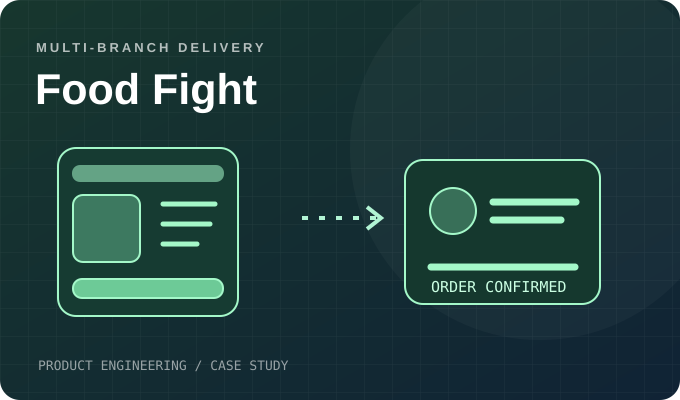
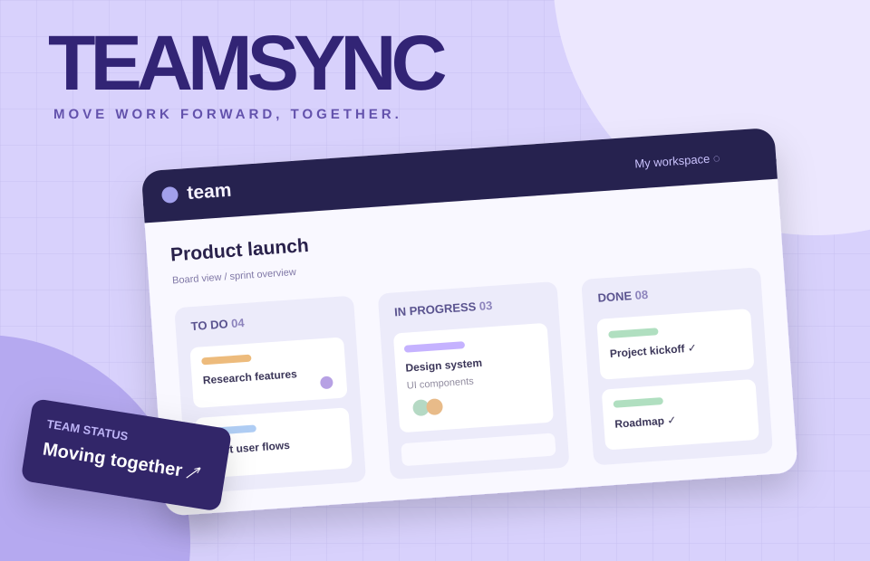

01 / FEATURED PROJECT01 / 04 APP DEVELOPMENT
Food
Fight.
Multi-role food delivery product designed around ordering, restaurant workflows, riders, and Cash on Delivery.
Explore the project ↗Hello, I'm Muhammad Irfan Waseem ↘
Software developer crafting mobile apps, web platforms, and thoughtful experiences for real-world problems.
A look at the problems I enjoy solving — from everyday mobile experiences to business-critical workflows.

01 / FEATURED PROJECTMulti-role food delivery product designed around ordering, restaurant workflows, riders, and Cash on Delivery.
Explore the project ↗ 02 / FEATURED PROJECT
02 / FEATURED PROJECT
Tools for inventory, purchasing, sales, and financial ledgers created around grain-market business needs.
Explore the project ↗
03 / FEATURED PROJECTA collaborative workspace exploring how team roles, ownership, and clear task status can work together.
Explore the project ↗ 04 / FEATURED PROJECT
04 / FEATURED PROJECT
Interview and aptitude practice exploring AI-assisted feedback and accessible career preparation.
Explore the project ↗I like software that works hard in the background and feels effortless at the surface.
I'm a BS Computer Science student at COMSATS University Islamabad, Sahiwal Campus. My work crosses Flutter applications, full-stack systems, and security-aware development.
I enjoy mapping complicated processes into clear flows, building practical interfaces, and improving the small details that make products useful.
From first sketch to working software, I choose the stack that fits the experience.
Multi-role applications and polished mobile interfaces.
Responsive, accessible experiences that feel intuitive.
APIs, authentication, data services, and integrations.
Secure-by-design thinking and practical security learning.
Good products aren't just built.
They're thought through.
Writing about networking, practical cybersecurity, and what I'm learning along the way.
Visit VeilGuard journal ↗